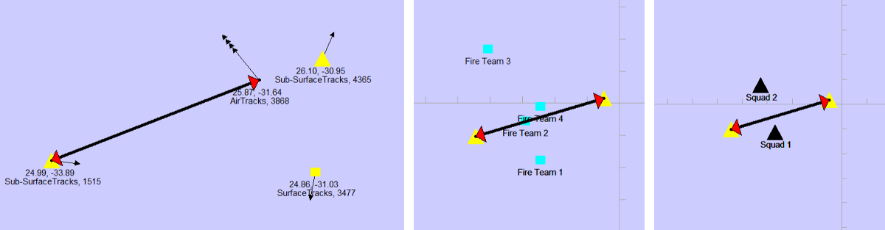

|
MapLink Pro .NET .
Envitia MapLink Pro: The Ultimate Mapping Application Toolkit
|
|
MapLink Pro .NET .
Envitia MapLink Pro: The Ultimate Mapping Application Toolkit
|
Track Aggregation provides a method of reducing the amount of tracks on the display based on static or dynamic rules. This is similar to the 'decluttering' concepts used elsewhere in MapLink however the rules for aggregation are evaluated at draw-time, allowing for more dynamic functionality.
This is provided through the Track Aggregator class.

A Track Group provides the ability to create a conceptual hierarchy of tracks which represents real-world structures. This class also provides the ability to assign a visualisation to the group in the same manner as tracks. This class is used by track aggregators to provide both:
Each aggregator implementation can use different parameters to declutter the tracks. These may include:
These parameters will change based on the implementation of the aggregator, however will typically involve a set of aggregator 'rules', which are primarily indexed based on the drawing surface zoom level.
This example demonstrates the basic setup of echelon-based aggregation. This is used to perform track aggregation based on the real-world relationship between the tracks.
When used in conjunction with Track Graphics any track which is used as a control point for a graphic will be excluded from aggregation.
This means that the aggregated track group will be displayed, in addition to the track itself in this situation.